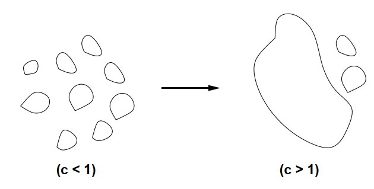

Lecture 15 - 2025 / 4 / 10
Giant Component (2)
Theorem: 对于 G∈Gn,p，其中 p=nc，c>1 是一个常数，则 a.a.s. G 存在唯一一个最大的连通分支大小是 βn(1+o(1))，其中 β 是 (0,1) 之间 β+e−βc=1 的唯一解。其余的连通块大小都是 O(logn) 级别。

Claim: 对于所有结点 v，a.a.s 以下两者之一成立：
- 从 v 开始的 braching process 在 k− 步内停止。
- ∀k s.t. k−≤k≤k+，从 v 开始的 branching process 在 k 步后，至少有 (c−1)k/2 个已探索但是没有饱和的结点。
对于后者，实际上只需要证明从 v 开始总共至少探索到了
2(c−1)k+k=2(c+1)k
个点。我们定义一个点 v 是 k-bad 的，如果从 v 开始的 branching process 在 k 步后停止或者探索到了少于 (c+1)k/2 个点。
因此，当 v 是 k-bad 时，从 v 开始的 branching process 被每次展开服从 B(n−2(c+1)k+,nc) 的过程支配（因为总共涉及到的点数不超过 (c+1)k+/2，因此 B(n−?,p) 的 ? 处不高于这个值）。
进而从 v 开始的 branching process 在 k 步内展开的点数，不低于 k 次采样 B(n−2(c+1)k+,nc) 展开的点数。
「上面这一步并没有理解，如果 branching process 提前终止了，为什么还能 dominate 固定次数采样的求和？」
从而 a.a.s 从任何一个点 v 开始的 branching process 要么在 k−=O(logn) 轮终止，要么持续至少 k+=n2/3 轮。记前面的一类点是 small 的，后面的一类是 large 的。
Lemma: a.a.s. 存在唯一的一个连通块，包含了所有 large 点。
考虑两个 large 的 u=v。分别从 u,v 独立进行 branching process，则在 k+ 轮后，两者已探索未饱和的点分别记作 U(u),U(v)，则这两个集合大小都 ≥2c−1k+。
如果前 k+ 步已经遇到公共点了，则 u,v 已连通。否则我们证明 w.h.p. U(u),U(v) 之间有边。
Pr[∄edge between U(u),U(v)]≤(1−p)(2c−1k+)2≤exp(−p(2c−1k+)2)≤exp(−4c(c−1)2n1/3)=o(n−2)
从而对所有 u,v 进行 union bound 立刻得到总概率是 o(1)。
至此已经证明了最大连通块的唯一性，以及所有小连通块都是 O(logn)，只剩下判断最大连通块的大小了。我们通过对 small 点计数来证明此。
Lemma: a.a.s. small 点的个数是 (1+o(1))(1−β)n。
根据 small 点的定义，可以知道 Pr[v is small]：
- (≥) 服从 B(n,c/n) 的 branching process 在 k− 步内终止的概率。
这是因为利用 B(n−⋯,p)≤B(n,p)，展出的点变多，终止概率变低。
- (≤) 服从 B(n−k−,c/n) 的 branching process 在 k− 步内终止的概率。
这是因为 small 的点总共展出了 ≤k− 个点，所以 B(n−⋯,p)≥B(n−k−,p)，展出的点变少，终止概率增大。
更进一步，用 d(n,p) 表示服从 B(n,p) 的 branching process 终止的概率：
- (≥) 根据 claim，我们知道 w.h.p. 如果不在 k− 步终止，则最终不会终止，故下界为 d(n,c/n)+o(1)。
- (≤) 不限制终止步数，终止概率自然增大，故上界为 d(n−k−,c/n)。
当 n→+∞ 时，根据泊松分布的结论，d(n,c/n)→1−β，其中 β 是 (0,1) 之间 β+e−βc=1 的解。同时因为 k−≪n，所以 d(n−k−,c/n)→1−β。根据 sandwiching 定理，可以知道
Pr[v is small]→1−β=:α
用 Z=∑vZv 代表 small 点的个数，我们通过 Chebyshev 给 Z 一个 concentration bound。则 E[Zv]→α,E[Z]=(1+o(1))αn。
E[Z2]=E[Z]+u=v∑E[ZuZv]=E[Z]+v∑Pr[v is small]u=v∑Pr[u is small∣v is small]
对于最后一个 ∑，可以拆分为 u 和 v 在同一连通块、u 和 v 在不同连通块的两类分别计数。
- 和 v 在同一连通块的 u 不超过 k− 个
- 和 v 在不同连通块的任何一个 u 满足
= ≤ ≤ Pr[u is small∣v is small]Pr[u is small in G(n−∣Comp(v)∣,p)]Pr[u is small in G(n−k−,p)]d(n−k−,c/n)∼d(n,c/n)→α
从而 E[Z2]≤E[Z]+n(α+o(1))(k−+n(α+o(1)))∼E[Z]+n2α2(1+o(1))=E[Z]2(1+o(1))。
从而根据 Chebyshev 不等式
Pr[∣Z−E[Z]∣>γE[Z]]≤γ21(E[Z]2E[Z2]−1)=γ21o(1)
只需取 γ=o(1) 但下降足够缓慢，则上式昭示了 a.a.s. 最大连通分支大小是 (1+o(1))βn。
综合以上两个 Lemma，原 Theorem 得证。